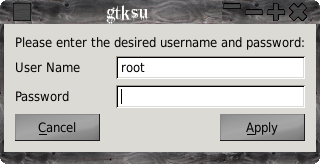

QtSu
QtSu - what is it?
A simple GUI written in Qt5/6 that allows you to run a program as root.
Although there are other programs of theis type most if not all rely on polkit or have a large number of dependencies, apps like ktsuss which this app was inspired by ( available here:http://ktsuss.googlecode.com/files/ktsuss-2.tar.gz ), some like ktsuss seem to have been abandoned ( last commit was 2011 ).
Also it seems that whenever polkit ( which is a nightmare! ) is updated these programs break, so this is the result there are few dependencies just Qt5 or Qt6 and glib and that's it.
Installation
Just run ./configure or ./autogen.sh from this folder then make
and sudo make install.
QtSu will use the default Qt version installed ( 5.x or 6.x, version 6.x will be prefered ).
To install to ( say ) /usr instead of the default /usr/local, add --prefix=/usr, --enable-links will as it says make links from ktsuss and gtksu to qtsu so that some programs that hard code the files think that ktsuss is being used ( spacefm ), default is to enable links.
The gktksu link is legacy and will be removed.
Usage:
qtsu [OPTION] [--] <command>
Run a command as another user
-u, --user USER
Runs the command as the given user
-m, --message MESG Change
default message in ktsuss window
Simple usage:
qtsu terminal.
If you need to add options use -- like so:
qtsu -u root -- terminal --hold -x ls -AF /
This programme has the potential to hose your system if used
unwisely,
BE WARNED!
May present a security risk so use at your own risk.
QtSu

Get it here:
QtSu
Back To Top
Back To Applications
{kind=link}